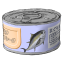

 ツナマヨの屋根裏部屋 ☀ ☾ － □ □ × ＜ ＞ ﾅﾋﾞｹﾞｰｼｮﾝ(N) あああ いいい お気に入り(F) 管理人のMissKey Design かかか ききき くくく 表示(V) ｳｨﾝﾄﾞｳの最大化 ｳｨﾝﾄﾞｳﾍｯﾀﾞｰの非表示 タスクバーの非表示 フレームの非表示 ﾌﾚｰﾑ位置の左右反転 昼間モード 夜間モード ヘルプ(H) マニュアル ツナマヨの屋根裏部屋について ﾍﾟｰｼﾞ内検索(S) ツナマヨの屋根裏部屋 ツナマヨの屋根裏部屋 ★あなたは××××人目のお客様です！★ お知らせはございません。 変更の多い割には内容変化なくてめんご